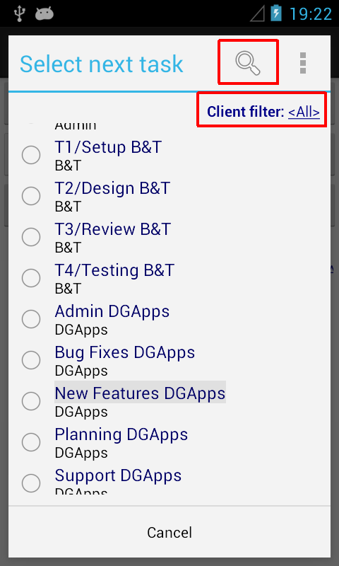
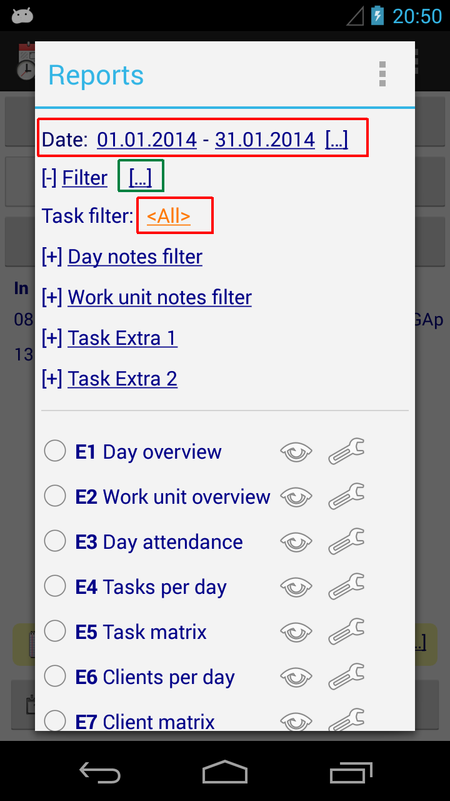
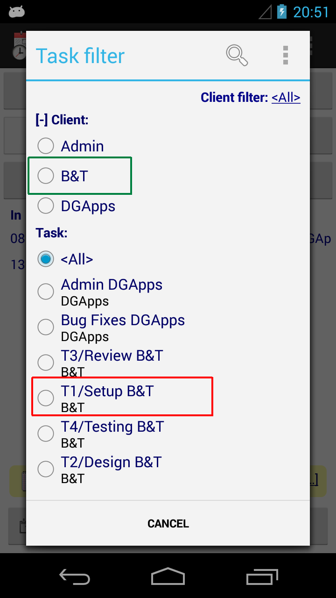

Time Recording - Tasks
(A) How to edit existing or create new tasks
• Click "Switch tasks", then select "Edit" or "New task".
Note the menu on the "Edit tasks" screenshot is either opened through the "Menu" button (if your device has one), or by tapping the context icon top right
=> Alternatively, just do a "long click" on the task field on the home screen - this will open the detail edit screen for the given task.
(B) How to display the tasks's client name on the main screen
• Go to Menu / Preferences
(C) How to filter tasks by client or task name (on-screen)

(D) Reporting per client or per task
• Go to "Menu / Reports", or do a long click on Day/Week/Month (Screen 1)
• Change the date range if required and select the according task or client (Screen 2, red boxes)
Alternatively, use the "[...]" lookups to apply previously used filters
• When selecting a task note that both Clients and Tasks are shown on the same filter page, see Screen 3:
- picking a client (green box) will show work units assigned to all tasks of the given client
- picking a task (red box) will only show work units assigned to that task
 |
|
 |
|
 |